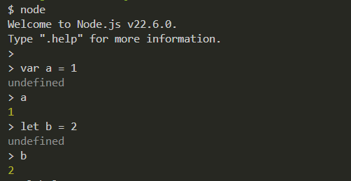
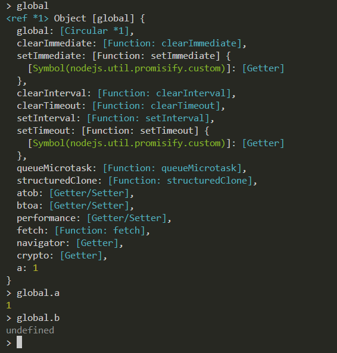

Si declaramos una variable con var se va guardar en el objeto window(en el navegador, Javascript), que con let no, y lo probamos tambien con la terminal Bash con el objeto de node.js donde al window se le llama "global":
 Comprobamos que Fronted_navegador(Javascript del front) como Backend_node.js (Javascript del lado del servidor) por lo tanto se considera una mala practica declarar una variable con VAR. Te invito a revisar su comportamiento en la consola de esta página ó en el archivo HTML.